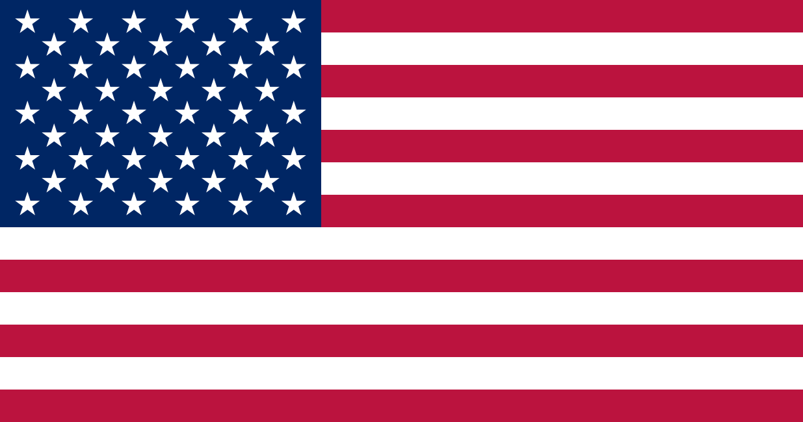

Die Vereinigten Staaten von Amerika (abgekürzt USA),
sind ihrer Verfassung zufolge
eine demokratische, föderal aufgebaute Republik in Nordamerika mit einigen Inseln in
Ozeanien. Sie besteht aus 50 Bundesstaaten, der Hauptstadt Washington, D.C., die einen
eigenen Bundesdistrikt darstellt, sowie aus fünf größeren Territorien und neun Inselterritorien.
Die USA sind mit mehr als 341 Millionen Einwohnern der drittgrößte
Staat der Erde nach Indien und China. Flächenmäßig sind sie mit 9,52 Millionen Quadratkilometern
der viertgrößte nach Russland, Kanada und China. Die einwohnerstärkste Stadt des Landes ist New York City,
eine Weltmetropole sowie eines der wichtigsten Kultur-, Medien-, Wirtschafts-, Handels- und Finanzzentren der Welt.
Bedeutende Metropolregionen sind Los Angeles, Chicago, Dallas, Houston, Philadelphia, Washington, Miami, Atlanta,
Boston und San Francisco mit jeweils über 5 Millionen Einwohnern. Der Grad der Urbanisierung liegt bei 83 Prozent.
Nach ihrem nationalen Selbstverständnis sind die Vereinigten Staaten besonders multikulturell geprägt.
Die Vereinigten Staaten haben eine gemeinsame Grenze mit Kanada, die insgesamt 8.895 Kilometer
lang ist (wobei sich ca. 2.477 Kilometer zwischen Alaska und Kanada erstrecken), und eine mit Mexiko,
die 3.326 Kilometer lang ist. Die Gesamtlänge der US-Landesgrenzen beträgt 12.221 Kilometer.
Die Küstenlinie an Atlantik, Pazifik und Golf von Mexiko umfasst insgesamt 19.924 Kilometer.
Der Staat umfasst eine Landfläche von 9.161.924 km², hinzu kommen 664.706 km²[28] Wasserflächen,
so dass sich ein Staatsgebiet von 9.826.630 km² inklusive Hoheits- und Küstengewässer ergibt.
Die Nord-Süd-Ausdehnung zwischen der kanadischen und der mexikanischen Grenze beträgt etwa 2.500 Kilometer,
die Ausdehnung zwischen Atlantik und Pazifik rund 4.500 Kilometer. Der Hauptteil des Landes liegt etwa
zwischen dem 24. und 49. nördlichen Breitengrad und zwischen dem 68. und 125. westlichen Längengrad und ist
in vier Zeitzonen eingeteilt (siehe Zeitzonen in den Vereinigten Staaten).
Die nördlichste Stadt der USA ist Utqiaġvik in Alaska, der südlichste Ort ist Hawaiian Ocean View in Hawaii.